Activity Report
REASONED: Robots lEarn tASks ObserviNg vidEo Demonstration
Overview
What this report covers
This report documents the research activity carried out during the first six-month period of the Research Grant, focused entirely on REASONED and, within it, on the currently active research question, RQ1: the robustness of human-video-conditioned manipulation policies. RQ2 and RQ3 are planned for the following reporting periods.
Robustness to novel tasks
How can we develop a system that is robust to novel tasks: new combinations of skills and objects (RQ1-1), and new spatial configurations with known objects (RQ1-2)?
Main Research Project
Human-Video-Conditioned Multi-Task Imitation Learning
A fundamental goal in robotics is building autonomous systems that can perform multiple manipulation tasks in flexible, dynamic environments. Human-Video Conditioning lets a robot learn a new task simply by watching a human demonstrator perform it: a more direct and intuitive form of task specification than natural-language instructions, since a video encodes not only what has to be done but also how. The central challenge is that the human demonstration cannot be transferred to the robot directly: demonstrator and robot may differ in embodiment, object layout, viewpoint, or environment.
Problem formulation
πθ: Or × Sr × Cd → Ar
The robot policy must map its current observation (Or), its proprioceptive state (Sr), and a video demonstration provided by a human demonstrator (Cd) to a robot action (Ar). This work focuses on the most general case: the demonstration is an unstructured video, with no action labels, segmentation, or kinematic alignment between demonstrator and robot.
Taxonomy
The baselines are organized into five method families (hand-tracking, object-centric, end-to-end, Vision-Language-Action, and World-Action Models), spanning Video-Conditioned, Language-Conditioned, and interleaved image-text-conditioned policies. The Video-Conditioned architectures capture the current state of the art in human-video-conditioned manipulation, while the Language-Conditioned ones are included because they sit at one of the most actively pursued research frontiers in Physical AI and Embodied Intelligence.
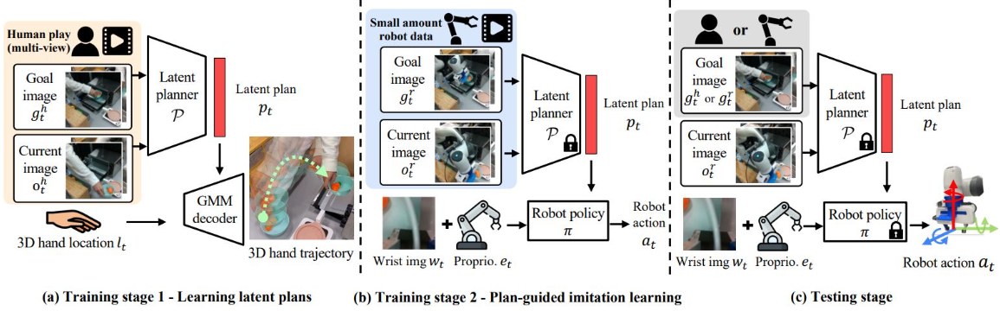
Hand-tracking
Explicitly estimates the human hand motion from the demonstration and uses it for planning or policy supervision. In Mimic-Play, a latent planner encodes the hand trajectory into a compact task-level plan that conditions a low-level control policy. Intuitive, but it must bridge the embodiment and environment mismatch between the human demonstrator and the robot.
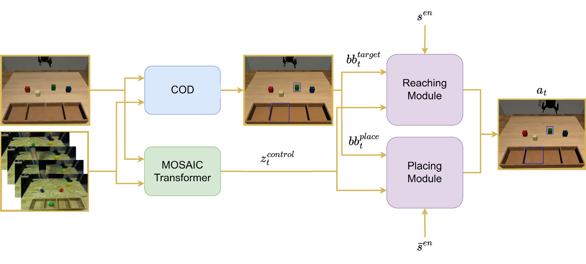
Object-centric
Instead of reproducing the human motion, the robot identifies the object involved in the task and reproduces or adapts its trajectory: a Conditioned-Object Detector localizes the manipulated item and its destination directly from the video demonstration. This reduces the dependency on the human embodiment, but performance can degrade when object appearance or spatial configuration changes significantly.
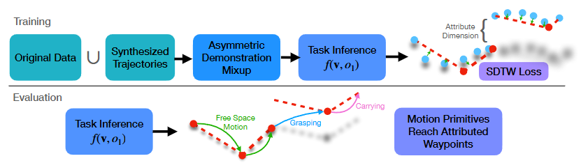
End-to-end
Removes the explicit extraction of hand or object trajectories and learns a direct mapping from the robot observation and the video demonstration to the robot action: a task-inference module predicts a structured sequence of waypoints, executed through hand-crafted motor primitives. This minimizes manual engineering, at the cost of a harder learning problem and limited interpretability.
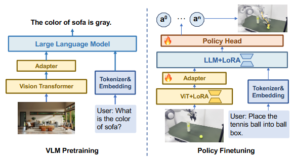
Vision-Language-Action
Within the end-to-end family, VLA models extend a large pretrained vision-language backbone with an action-prediction head. The resulting policies inherit the semantic representations and robustness built up during large-scale pretraining, marking a significant step toward general-purpose robotic policies, though they typically demand large-scale datasets and remain difficult to fine-tune efficiently.
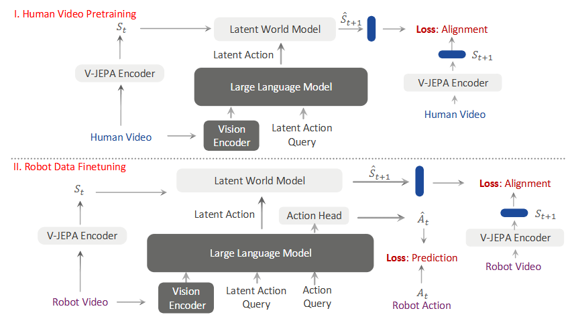
World-Action Model
A latent dynamics encoder is pretrained on large-scale, action-free video, including human demonstrations, to predict future visual states. The resulting learned world dynamics are then adapted to condition the action-prediction head.
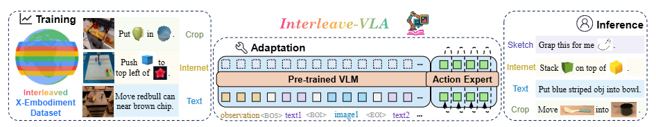
Interleave-VLA
An instruction-centric take on robustness: a pretrained VLA (π0) is extended, through a lightweight tokenizer adaptation, to accept interleaved image-text instructions in which task-relevant objects are referenced by cropped images (e.g., “Put [image1] into [image2]”). Grounding objects in images rather than ambiguous text mitigates attentional hallucinations in text-only VLAs.
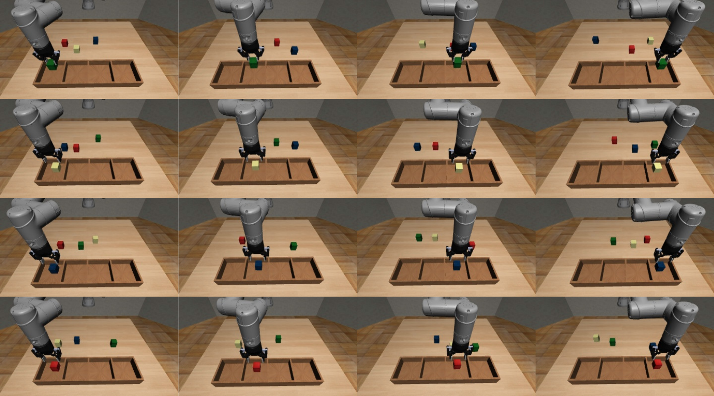
Evaluation scenario: the robot must pick a colored object and place it into the bin indicated by the human video demonstration, across 16 pick-place variations in total. Metrics: Reach, Pick, Success, Success on Wrong Object, and Success on Wrong Bin.
Hand-tracking baseline: Mimic-Play
Mimic-Play was trained under three increasingly challenging settings, progressively widening the trajectory space the latent planner must represent: a fixed shared region (demonstrator and robot share the spawn region, objects always in the same place), a variable shared region (same region, objects in any of four locations), and different regions (demonstrator and robot operate from different spawn regions).
| Setting | Reach | Pick | Success |
|---|---|---|---|
| Fixed shared region | 0.708 ± 0.012 | 0.456 ± 0.018 | 0.325 ± 0.010 |
| Variable shared region | 0.431 ± 0.000 | 0.312 ± 0.000 | 0.288 ± 0.005 |
| Different regions | 0.277 ± 0.024 | 0.190 ± 0.012 | 0.173 ± 0.011 |
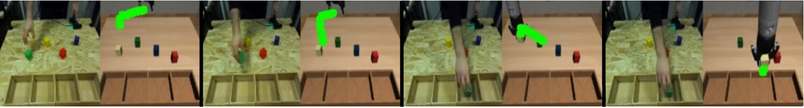
Mimic-Play failure mode with different spawn regions: the gripper trajectory predicted by the latent planner (green dots) is biased toward the demonstrator's spawn region rather than the actual object location in the robot workspace.
Performance degrades consistently as spatial complexity grows (Success 0.325 → 0.288 → 0.173). The drop in Reach is the most telling signal: because the encoded hand trajectory is tightly coupled to the demonstrator's scene layout, the latent planner steers the robot toward the demonstrator's spawn region rather than the actual object location.
In-distribution comparison across the five families
All baselines evaluated on the standard scenario, averaged over 16 task variations × 10 runs with different environment initializations, together with the priors each method exploits.
| Family | Model | Priors | Reach | Pick | Success | Wrong-Obj. |
|---|---|---|---|---|---|---|
| Hand-tracking | Mimic-Play | VAE-predicted robot-space trajectory from the human hand | 0.27 | 0.19 | 0.17 | 0.45 |
| End-to-end | MOSAIC | No task-specific prior | 0.29 | 0.22 | 0.21 | 0.63 |
| End-to-end | OSVI-AWDA | Motor-skill primitives for moving and picking | 1.00 | 1.00 | 1.00 | 0.00 |
| Object-centric | CTOD-Policy | Conditioned-Object Detector on the target object | 0.99 | 0.95 | 0.60 | 0.00 |
| Object-centric | COD-Policy | Conditioned-Object Detector on all task objects | 1.00 | 0.95 | 0.93 | 0.00 |
| World-Action Model | VLA-JEPA | No task-specific prior | 1.00 | 1.00 | 1.00 | 0.00 |
| World-Action Model | Mimic-Video | No task-specific prior | 0.87 | 0.67 | 0.65 | 0.00 |
| VLA | OpenVLA-OFT | No task-specific prior | 0.99 | 0.99 | 0.97 | 0.00 |
| VLA | TinyVLA-H | No task-specific prior | 1.00 | 0.98 | 0.96 | 0.00 |
| VLA | MolmoAct2 | No task-specific prior | 0.94 | 0.84 | 0.80 | 0.00 |
| VLA | Interleave-VLA | Visual description of target objects | 1.00 | 0.96 | 0.83 | 0.00 |
MOSAIC mostly fails to identify the task-relevant object (Wrong-Object 0.63), while the object-centric methods eliminate wrong-object failures entirely. OSVI-AWDA and VLA-JEPA reach a perfect Success rate, and the VLA family also performs strongly: every family can solve the task when training and evaluation configurations match. As the RQ1 results below show, this in-distribution performance does not necessarily carry over to out-of-distribution conditions, particularly for the object-centric and motor-primitive-based families.
RQ1
Robustness of Human-Video-Conditioned Policies
RQ1 is decomposed into two complementary robustness axes, shown below: task-level robustness (RQ1-1) and spatial-level robustness (RQ1-2).
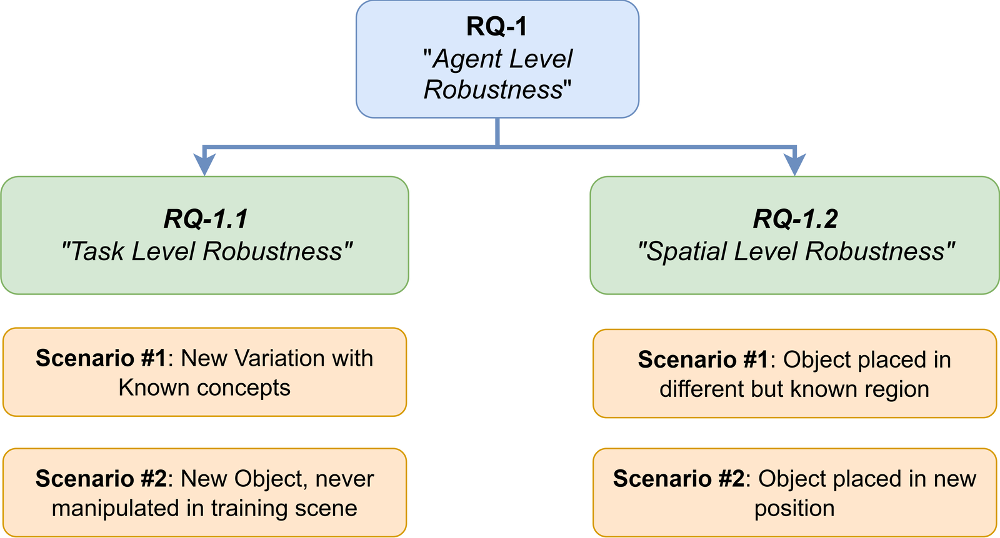
RQ1 is decomposed into two robustness axes: RQ1-1, task-level (new task combinations, new object instances), and RQ1-2, spatial-level (known but different region, unseen position). Each axis is evaluated through two complementary scenarios, reported below.
RQ1-1
Task-Level Robustness: Baseline Results
Can the baselines reuse known skills, objects, and trajectories in combinations not seen during training? Two complementary scenarios are evaluated under Training-Distribution (TD) and Out-of-Training-Distribution (OTD) settings.
Scenario #1: Novel task configurations
Object-color / target-bin combinations not seen during training; the individual objects and bins are all known.
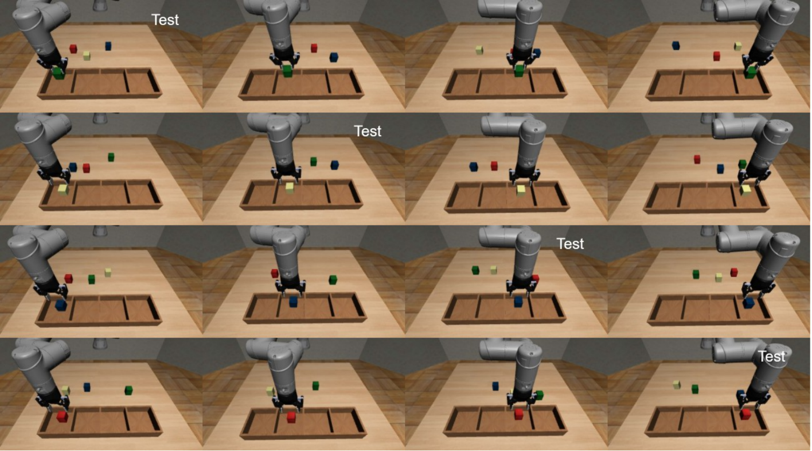
The robot must solve a task variation defined by an object-color and target-bin combination not seen during training, while the individual objects and bins are all known.
| Model | Cond. | TD Success | OTD Success | OTD Wrong-Obj. | OTD Wrong-Bin |
|---|---|---|---|---|---|
| OSVI-AWDA | Video | 1.00 | 0.95 | 0.05 | 0.00 |
| COD-Policy | Video | 0.90 | 0.00 | 0.00 | 0.00 |
| OpenVLA-OFT † | Lang. | 0.95 | 0.98 | 0.00 | 0.00 |
| TinyVLA-H † | Lang. | 0.87 | 0.87 | 0.00 | 0.08 |
| VLA-JEPA † | Lang. | 0.98 | 1.00 | 0.00 | 0.00 |
| Interleave-VLA | Interl. | 0.84 | 0.78 | 0.00 | 0.15 |
Scenario #2: Novel object instances
The robot must manipulate an object present in the training environment but never used as a manipulation target during training.
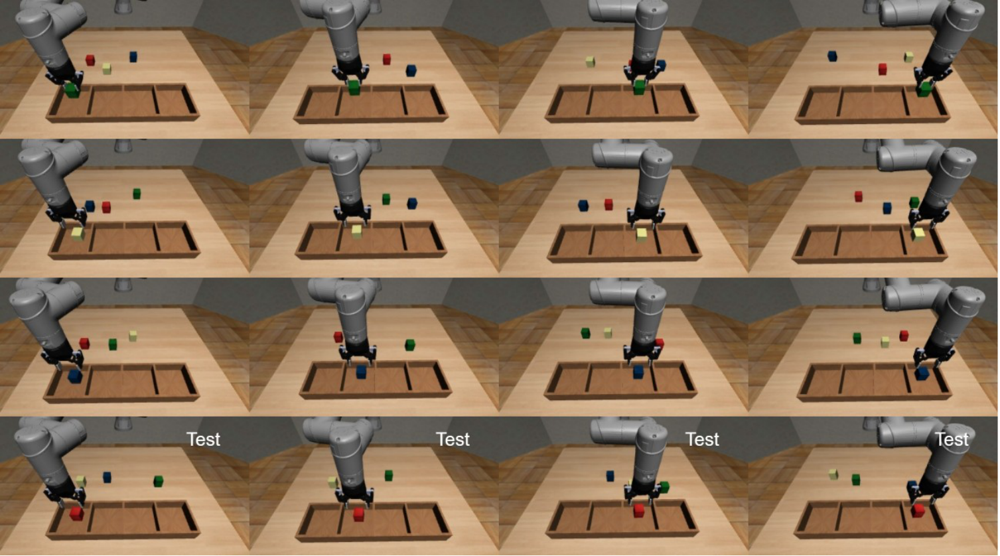
The robot must manipulate an object that was present in the training environment but was never used as a manipulation target during training.
| Model | Cond. | TD Success | OTD Success | OTD Wrong-Obj. | OTD Wrong-Bin |
|---|---|---|---|---|---|
| OSVI-AWDA | Video | 1.00 | 0.00 | 0.98 | 0.00 |
| COD-Policy | Video | 0.90 | 0.00 | 0.00 | 0.00 |
| OpenVLA-OFT † | Lang. | 0.88 | 0.92 | 0.00 | 0.01 |
| TinyVLA-H † | Lang. | 0.77 | 0.00 | 0.77 | 0.00 |
| VLA-JEPA † | Lang. | 1.00 | 0.97 | 0.02 | 0.00 |
| Interleave-VLA | Interl. | 0.95 | 0.89 | 0.00 | 0.05 |
† Language-conditioned upper-bound references, conditioned on ground-truth instructions. Interl.: interleaved image-text instruction, as used by Interleave-VLA, which stays robust OTD (0.78 and 0.89) with residual errors confined to the target bin. COD-Policy collapses entirely out-of-distribution in both scenarios. More critically, OSVI-AWDA and TinyVLA-H exhibit a dangerous failure mode in Scenario #2: instead of failing to reach the object, they actively grasp and place the wrong one (Wrong-Object rates of 0.98 and 0.77). Only the broadly pre-trained baselines (VLA-JEPA and OpenVLA-OFT) remain robust across both scenarios, confirming that task-level robustness largely derives from large-scale pre-training rather than from the baseline's architecture family.
RQ1-2
Spatial-Level Robustness: Baseline Results
Can the baselines operate correctly when the manipulated object is placed in spatial configurations not encountered during training? Preliminary results for the two complementary scenarios are reported below; COD-Policy and Interleave-VLA results for this axis are still being collected.
Scenario #1: Known but different region
For each object color, one spawn region is withheld during training; that same region remains valid for the other colors.
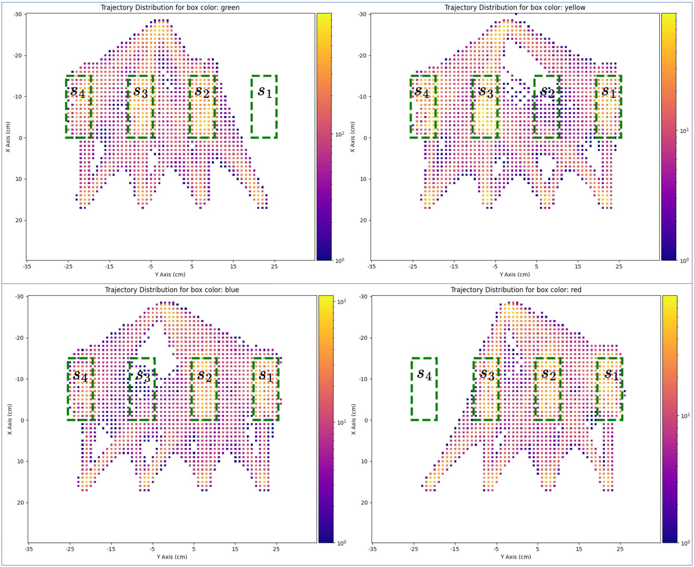
Trajectory-endpoint density distribution, reported separately for each box color. Dashed green boxes mark the four bin-aligned spawn regions used during training; for each box, one specific region is withheld during training and used for testing.
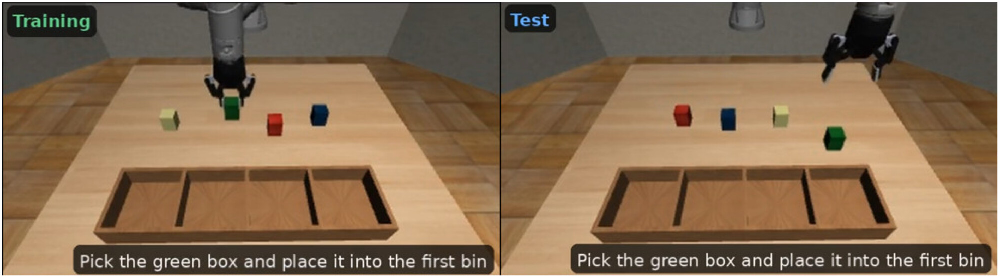
Qualitative training/test example: for the same instruction, the target object is spawned at a slightly different position within the same known region, requiring the policy to remain robust to this local spatial perturbation.
| Model | Cond. | TD Success | OTD Success | OTD Wrong-Obj. | OTD Wrong-Bin |
|---|---|---|---|---|---|
| OSVI-AWDA | Video | 0.99 | 0.49 | 0.39 | 0.00 |
| OpenVLA-OFT † | Lang. | 0.97 | 0.81 | 0.00 | 0.00 |
| TinyVLA-H † | Lang. | 0.96 | 0.96 | 0.00 | 0.00 |
| VLA-JEPA † | Lang. | 0.98 | 0.97 | 0.00 | 0.00 |
Scenario #2: Unseen position
The same spawn region is removed for all colors; the robot must reach a target object placed in a position never observed during training.
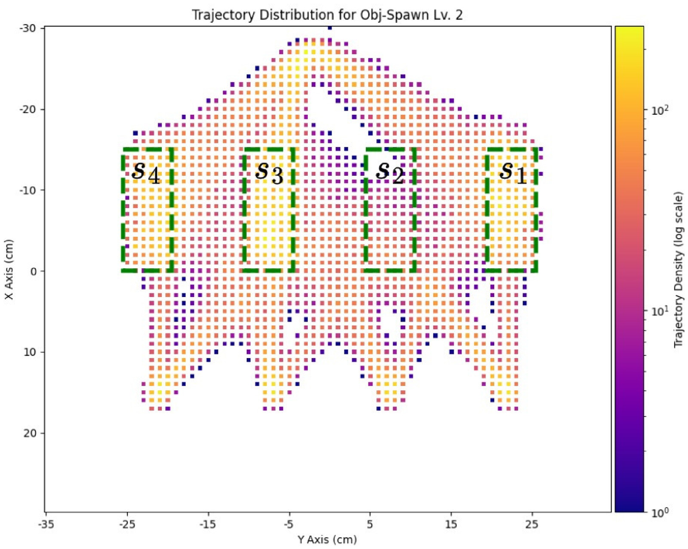
Cumulative trajectory distribution after removing one spawn region from training; points still appear within it as the robot passes through on its way to the target bin.
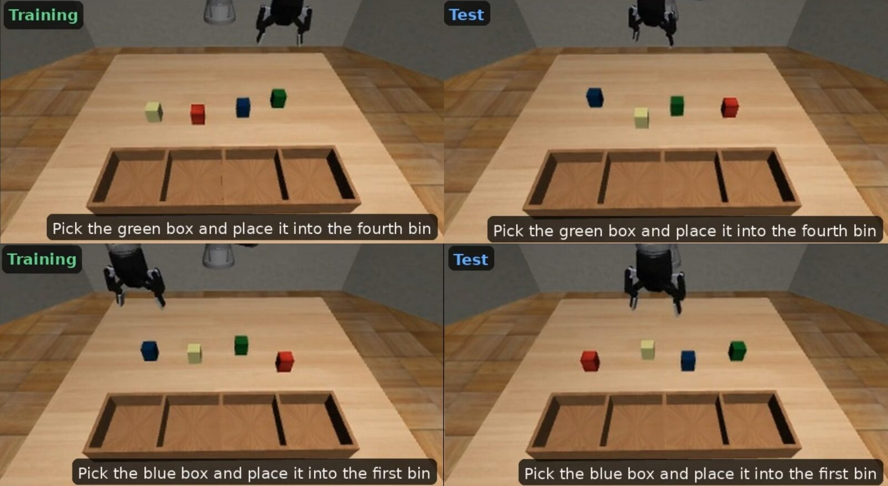
Qualitative training/test example: for the same instruction, the target object is spawned at a novel position not observed during training, requiring the policy to correctly localize and reach it despite the unseen spatial configuration.
| Model | Cond. | TD Success | OTD Success | OTD Wrong-Obj. | OTD Wrong-Bin |
|---|---|---|---|---|---|
| OSVI-AWDA | Video | 0.99 | 0.30 | 0.49 | 0.49 |
| OpenVLA-OFT † | Lang. | 0.71 | 0.37 | 0.02 | 0.00 |
| TinyVLA-H † | Lang. | 0.86 | 0.01 | 0.47 | 0.00 |
| VLA-JEPA † | Lang. | 0.99 | 0.31 | 0.37 | 0.00 |
† Language-conditioned upper-bound references. Unlike RQ1-1, spatial-level robustness is not solved by large-scale pre-training alone: every baseline, including VLA-JEPA, degrades sharply once the object is placed in a genuinely unseen position (Scenario #2 OTD Success drops to 0.31 or below for all models), with high Wrong-Object or Wrong-Bin rates. This gap is the main motivation for the architecture presented in the Proposal section below.
Proposal
VC-VLA: Video-Conditioned Vision-Language-Action
To address RQ1, we designed VC-VLA, which extends language-conditioned policies to the human-video-conditioned setting by separating task inference from task execution.
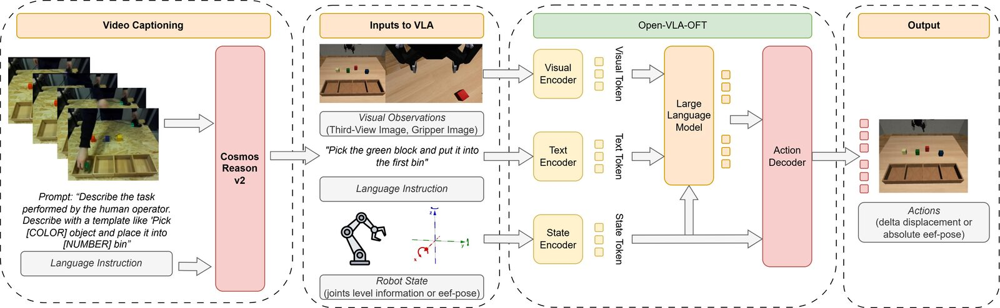
VC-VLA overview. A video-captioning module (Cosmos-Reason V2) performs task inference, turning the raw human video into a high-level textual instruction; this instruction, together with the robot's visual observation and proprioceptive state, is fed to a language-conditioned Vision-Language-Action model (task execution), evaluated here with OpenVLA-OFT, TinyVLA-H, and VLA-JEPA as interchangeable backbones. This decoupled design requires no manual segmentation, task annotation, or kinematic alignment.
(both prompt variants)
strong a-priori prompt
free-placement prompt (no scene priors)
Cosmos-Reason V2 reliably identifies the manipulated object in every case; residual errors are confined to target-bin identification, and remain almost unchanged even when the prompt is made scene-agnostic (0.91 → 0.90), showing that hand-crafted scene priors are not required for reliable task inference.
VC-VLA on the standard scenario
Each language-conditioned backbone (ground-truth instruction) is compared with its VC-VLA counterpart, where the instruction comes from the Cosmos-Reason V2 caption.
| Model | Reach | Pick | Success | Wrong-Bin |
|---|---|---|---|---|
| OpenVLA-OFT | 0.99 | 0.99 | 0.97 | 0.00 |
| Cosmos + OpenVLA-OFT | 0.99 | 0.99 | 0.88 | 0.09 |
| TinyVLA-H | 1.00 | 0.98 | 0.96 | 0.00 |
| Cosmos + TinyVLA-H | 1.00 | 0.96 | 0.83 | 0.12 |
| VLA-JEPA | 1.00 | 1.00 | 1.00 | 0.00 |
| Cosmos + VLA-JEPA | 0.99 | 0.99 | 0.90 | 0.10 |
For every backbone, the Success drop introduced by VC-VLA is entirely explained by the Wrong-Bin rate, with no additional wrong-object failures: captioning ambiguity is confined to target-bin identification. VC-VLA is therefore backbone-agnostic, and improving bin identification in the captioning module is the most direct way to close the remaining gap. The MolmoAct2 integration is currently under evaluation.
Simulated Results
VC-VLA pipelines (Cosmos-Reason V2 paired with each backbone) were evaluated across all four RQ1 scenarios, mirroring the baseline protocol above.
| Pipeline | Scenario | TD Success | OTD Success |
|---|---|---|---|
| Cosmos + OpenVLA-OFT | RQ1-1 · S1 (task combo) | 0.86 | 0.90 |
| Cosmos + OpenVLA-OFT | RQ1-1 · S2 (novel object) | 0.82 | 0.80 |
| Cosmos + TinyVLA-H | RQ1-1 · S1 (task combo) | 0.75 | 0.74 |
| Cosmos + TinyVLA-H | RQ1-1 · S2 (novel object) | 0.73 | 0.00 |
| Cosmos + VLA-JEPA | RQ1-1 · S1 (task combo) | 0.88 | 0.93 |
| Cosmos + VLA-JEPA | RQ1-1 · S2 (novel object) | 0.88 | 0.91 |
| Cosmos + VLA-JEPA | RQ1-2 · S1 (known region, prelim.) | 0.79 | 0.79 |
| Cosmos + VLA-JEPA | RQ1-2 · S2 (unseen position, prelim.) | 0.79 | 0.26 |
On the RQ1-1 (task-level) axis, VC-VLA is largely backbone-agnostic and remains robust OTD, with the residual gap to the language-conditioned upper bound explained almost entirely by bin-identification errors in the captioning module (Cosmos+TinyVLA-H is the exception, inheriting TinyVLA-H's own Wrong-Object failure mode). On the RQ1-2 (spatial-level) axis, preliminary Cosmos+VLA-JEPA results mirror the baseline picture: performance holds for a known-but-different region, but drops sharply for genuinely unseen positions (0.79 → 0.26), confirming spatial-level robustness as the key open problem for this ongoing activity.
Real-World Results
To verify that these robustness properties transfer beyond simulation, a preliminary evaluation campaign was carried out on a real UR5e manipulator, reproducing the same pick-and-place scenario with 40 teleoperated demonstrations per task variation across five spatial configurations.
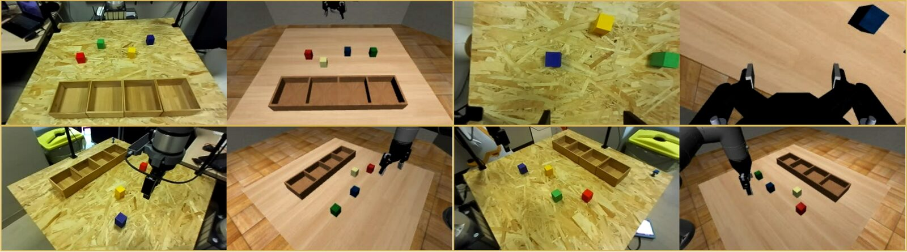
Real UR5e workspace (bottom) matched against its simulated counterpart (top), with corresponding third-view and wrist-camera viewpoints.
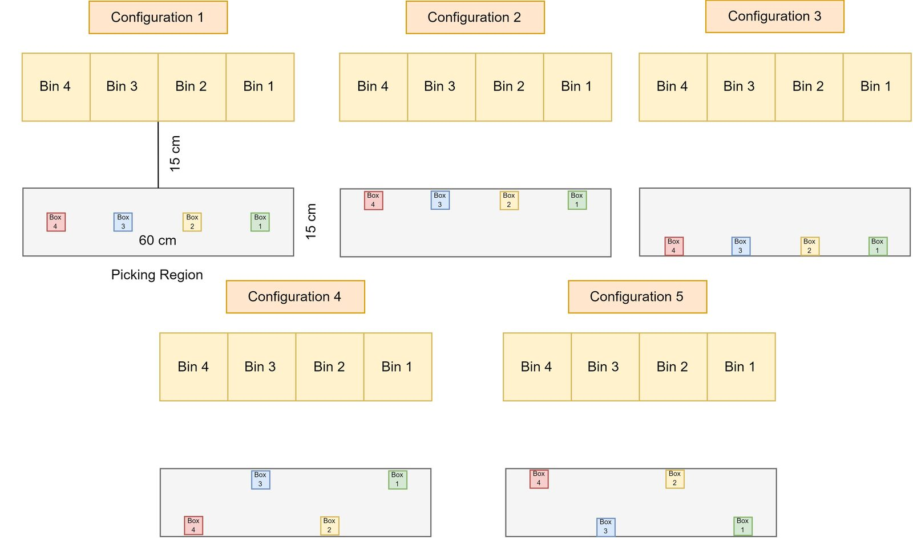
Data-collection protocol: five spatial configurations of the target objects relative to the fixed bin layout, used to diversify the teleoperated demonstrations.
Besides the learned baselines already used in simulation, the real-world campaign also includes SeeDo, a non-learning-based baseline that grounds a demonstration through hand-crafted heuristics and pretrained Vision-Language Models rather than a learned policy.
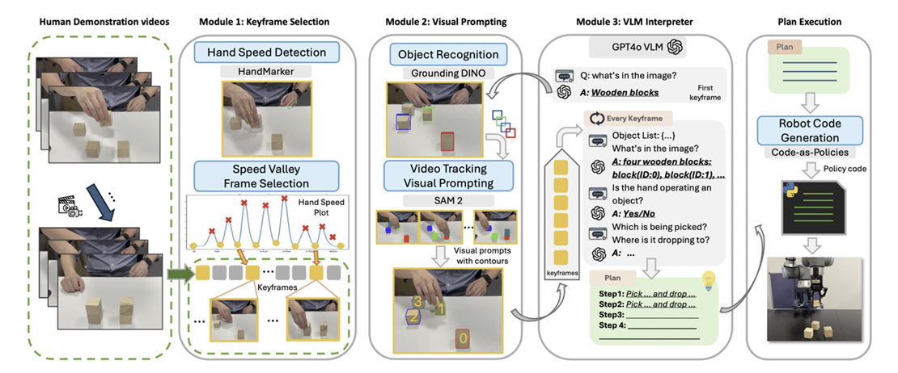
Original SeeDo pipeline: keyframe selection and object tracking on the demonstration video produce a symbolic plan (VLM interpreter), which is grounded at runtime and compiled into executable robot code.
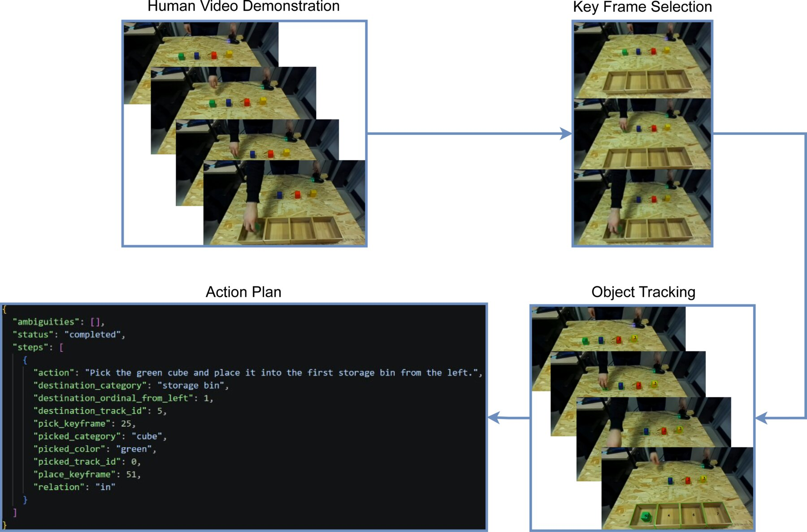
SeeDo Demonstration Phase, as adapted here: Start, Pick, and Place keyframes are extracted from the human video, objects and bins are tracked, and the VLM Interpreter produces a symbolic Action Plan.
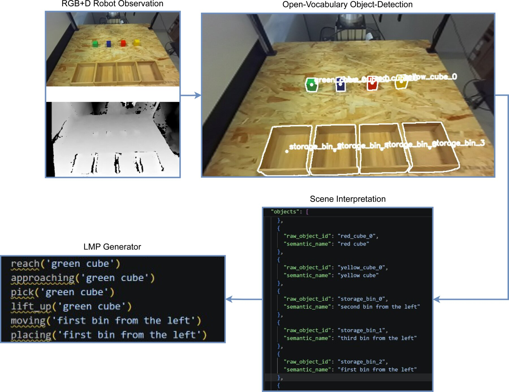
SeeDo Runtime and Control Phase: open-vocabulary detection on the RGB-D robot observation, scene interpretation, and an LMP generator (Code-as-Policies) executing hand-crafted motion primitives.
| Model | TD Pick | TD Success | TD W.O. | TD W.B. | OTD Pick | OTD Success | OTD W.O. | OTD W.B. |
|---|---|---|---|---|---|---|---|---|
| SeeDo (non-learning) | 1.00 | 1.00 | 0.00 | 0.00 | 1.00 | 1.00 | 0.00 | 0.00 |
| COD-Policy | 0.62 | 0.52 | 0.00 | 0.10 | 0.19 | 0.06 | 0.00 | 0.13 |
| OSVI-AWDA | 1.00 | 1.00 | 0.00 | 0.00 | 0.75 | 0.75 | 0.15 | 0.00 |
| Interleave-VLA | 0.75 | 0.67 | 0.00 | 0.00 | 0.75 | 0.62 | 0.00 | 0.06 |
| VLA-JEPA | 0.67 | 0.67 | 0.00 | 0.00 | 0.81 | 0.75 | 0.00 | 0.00 |
| Cosmos + VLA-JEPA (VC-VLA) | Real-robot rollouts in progress | |||||||
W.O.: Success on Wrong Object; W.B.: Success on Wrong Bin. TD: 48 trajectories (4 runs × 12 task variations); OTD: 16 trajectories (4 runs × 4 task variations). The best-performing baselines are the two methods built on hand-crafted heuristics, SeeDo and OSVI-AWDA, which transfer to the real robot almost without degradation. Fully data-driven methods (COD-Policy, Interleave-VLA, VLA-JEPA) show a pronounced sim-to-real gap: VLA-JEPA drops to 0.67 TD / 0.75 OTD Success against 0.98 / 0.97 in simulation.
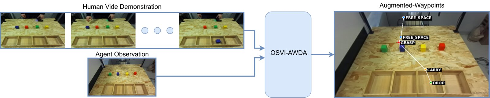
OSVI-AWDA predicts attributed waypoints (Free-Space, Grasp, Carry, Drop) from the human video, which are executed through hand-crafted motor primitives.
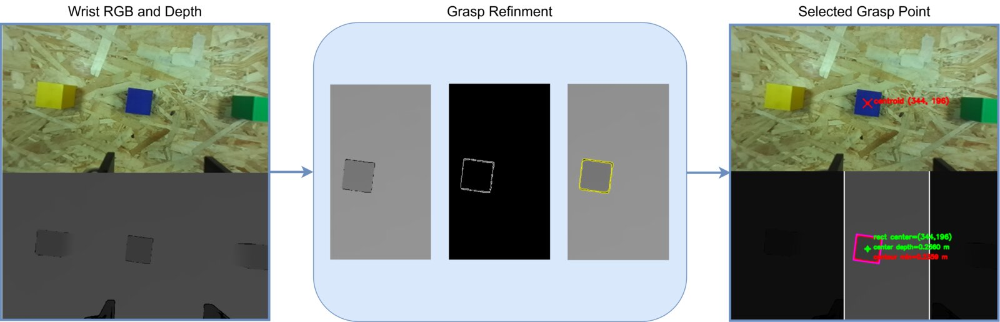
At the grasp waypoint, a refinement step localizes the a-priori-known object in the wrist RGB-D view (contour, centroid, depth), relying on an accurate camera-to-robot calibration.
This gap has a clear explanation. SeeDo and OSVI-AWDA rely on hand-crafted heuristics that require a-priori knowledge of (i) the task, since SeeDo's prompt must be tuned per task (see the SeeDo analysis), and (ii) the object to be manipulated, which is localized through a calibrated camera-to-robot transform. Learned control policies are more flexible given enough data, but more sensitive to the sim-to-real domain gap and to the lower quality of real teleoperated demonstrations, which are noisier and costly to collect. Real-world evaluation of the proposed VC-VLA pipeline reuses the RQ1-1 train/test task configurations on the real UR5e and is currently in progress.
Appendix
SeeDo: Prompt Tuning and Calibration Robustness
SeeDo's strong real-world numbers rest on two assumptions that VC-VLA does not need: (i) a task-specific prompt to localize the target object in the robot scene, and (ii) an accurately calibrated camera-to-robot transform. The experiments below measure how sensitive SeeDo is to each.
1. Agent scene description
For the same pick-and-place task, a prior-guided prompt that restricts the detector vocabulary to the four known cube colors is compared with a generalized prompt that describes each object only by its visible color and a generic object type, with and without distractor objects in the scene.
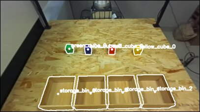
Scene with only the four target cubes (no distractors).
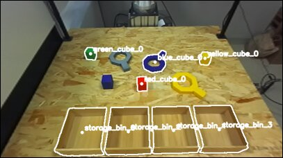
Same scene with additional distractor objects.
| Scene | Metric | Prior-guided · Class | Prior-guided · Attribute | Generalized · Class | Generalized · Attribute |
|---|---|---|---|---|---|
| No distractors | Acc. / Prec. / Rec. / F1 | 1.00 | 1.00 | 1.00 | 1.00 |
| With distractors | Accuracy | 0.80 | 0.64 | 0.94 | 0.88 |
| With distractors | Precision | 0.91 | 0.81 | 1.00 | 1.00 |
| With distractors | Recall | 0.88 | 0.75 | 0.94 | 0.88 |
| With distractors | F1-score | 0.89 | 0.78 | 0.97 | 0.93 |
Class: correct object type; Attribute: object type and correct color. Without distractors both prompts are perfect. With distractors, the prior-guided prompt, despite encoding stronger scene assumptions, is the more brittle one: its closed vocabulary forces the detector to read visually similar distractors as target cubes, inflating false positives. Closed-vocabulary priors help only in the exact scene they were tuned for.
2. Prompt generalization across tasks
The same generalized prompt is applied, unchanged, to two structurally different tasks: cube pick-and-place and nut assembly (pick a nut and place it onto a peg). A tuned variant then returns structured JSON records separating each object's category from its attributes, and grounds unfamiliar shapes with concrete nouns (e.g., “wooden peg”).
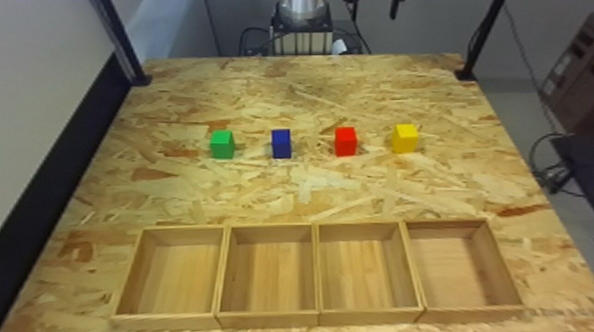
Cube pick-and-place: pick a cube and place it into a storage bin.
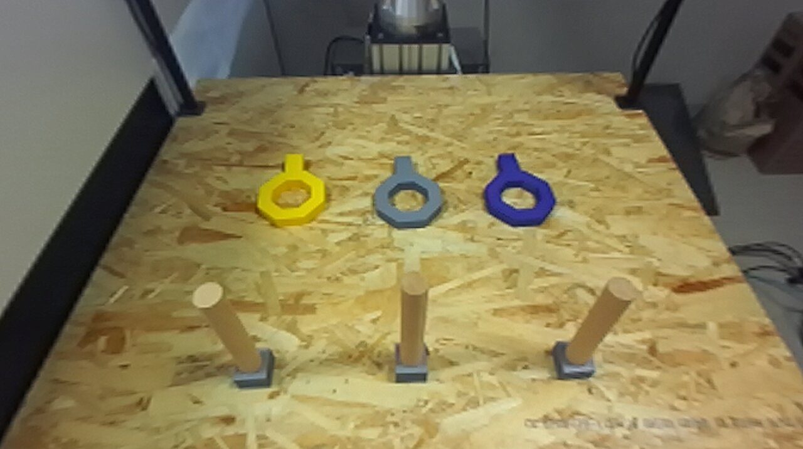
Nut assembly: pick a nut and place it onto a peg.
| Prompt | Box acc. | Bin acc. | Pick-and-place Success | Nut acc. | Peg acc. | Nut-assembly Success |
|---|---|---|---|---|---|---|
| Generalized | 1.00 | 1.00 | 1.00 | 1.00 | 0.00 | 0.00 |
| Tuned generalized | 1.00 | 1.00 | 1.00 | 1.00 | 1.00 | 0.00 |
Prompt tuning raises peg localization from 0.00 to 1.00, yet nut-assembly success stays at 0.00: the remaining gap lies in the grasping and manipulation strategy, which lacks object-specific knowledge such as the peg's pose and thread alignment. Adapting SeeDo to a new task therefore costs a round of prompt tuning plus a separate, still unresolved, adaptation of the motor-primitive library, a cost that a learned pipeline such as VC-VLA is designed to absorb from data.
3. Sensitivity to camera-calibration noise
Zero-mean Gaussian noise is added independently to each translation and rotation component of the camera-to-robot extrinsic transform; SeeDo is evaluated over 5 trials of the same pick-and-place task at each noise level.
| Translation noise (mm) | Rotation noise (°) | Success rate | Successful trials |
|---|---|---|---|
| 0.0 | 0.00 | 100% | 5/5 |
| 1.0 | 0.10 | 100% | 5/5 |
| 3.0 | 0.25 | 100% | 5/5 |
| 5.0 | 1.00 | 40% | 2/5 |
| 10.0 | 2.00 | 0% | 0/5 |
| 25.0 | 5.00 | 0% | 0/5 |
SeeDo tolerates only a few millimeters and a fraction of a degree of calibration error, then collapses rather than degrading gracefully. Accurate calibration is a hard requirement for SeeDo, whereas VC-VLA, like data-driven approaches in general, perceives the scene end-to-end from RGB observations and does not depend on a hand-crafted extrinsic calibration.
Dissemination
Publications and activities
Conference papers (accepted)
-
ICPR-W
Greco, L., Rosa, F., Saggese, A., & Vento, M. (2026). SociaRI: Enhancing Social Robot Acceptance through Ontology-Based Context Modeling and LLM-Driven Dialogue. BRAIN Workshop at ICPR 2026, Springer, Lyon, France. GGS rating: A-
-
ECCV-W
Greco, L., Rosa, F., Saggese, A., & Vento, M. (2026). EYE: Enhanced YOLO for Empty-shelf detection. 14th International Workshop on Assistive Computer Vision and Robotics (ACVR 2026) at ECCV 2026. GGS rating: A++
-
AVSS
Greco, L., Rosa, F., Saggese, A., & Vento, M. (2026). User-Centric Knowledge Graphs: Grounding Language Models for Context-Aware Social Robotics. IEEE AVSS 2026. GGS rating: B
-
Ital-IA
Adinolfi, T., Amato, E., Foggia, P., Greco, L., Guarini, A., Rosa, F., Saggese, A., & Vento, M. (2026). Multimodal Intelligence in Robotics: From Social Interaction to Autonomous Manipulation and Navigation. Ital-IA 2026: 5th National Conference on Artificial Intelligence.
Journal papers (submitted)
-
TKDE
Carletti, V., Foggia, P., Rosa, F., Saggese, A., & Vento, M. (2026). Scaling subgraph isomorphism: Exploiting massive GPU parallelism with VF-GPU. IEEE Transactions on Knowledge and Data Engineering, under review. Q1
-
TOMM
Greco, L., Rosa, F., Saggese, A., & Vento, M. (2026). ADAPT-MAGNET: A multimodal multitask architecture for gender and emotion recognition. ACM Transactions on Multimedia Computing, Communications, and Applications, under review. Q1
Workshop organization
About
The author
Francesco Rosa, Ph.D.
Post-Doctoral Researcher
Dipartimento di Ingegneria dell'Informazione ed Elettrica e Matematica Applicata (DIEM), Università degli Studi di Salerno. Research focus: robot learning from human video demonstration and multi-task imitation learning.
Supervisor: Prof. Mario Vento